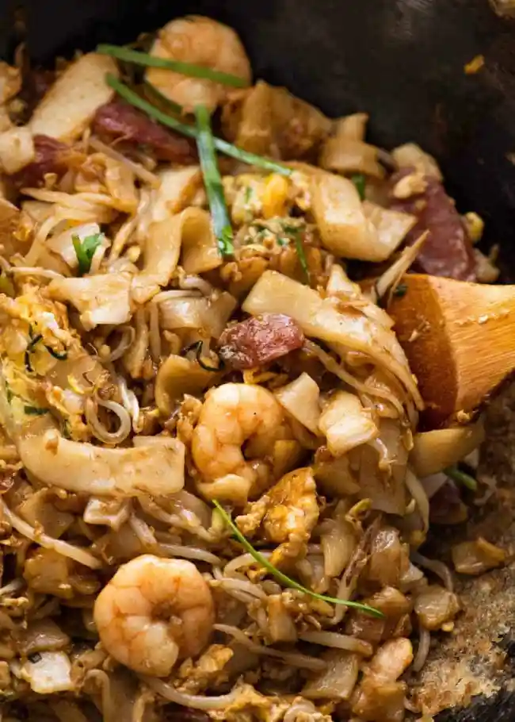

Kway Teow Recipe

Description
One of the most epic noodle dishes in the world from the streets of Malaysia: Char Kway Teow! Big flavours, contrasting textures and the signature hint of charred smokiness, this is bold South East Asian food at its best!
How to make the best kway teow at home
- Heat 1 tbsp oil in a large non stick skillet over high heat.
- When heated, add shrimp and cook for 1 1/2 minutes until just cooked through, then remove into bowl
- Add Chinese sausage and fish cake, and cook for 1 minute until sausage is caramelised, then add to bowl.
- Add 1 tbsp oil then add egg and cook, pushing in the edges to make a thick omelette. Once set, chop it up roughly using a wooden spoon (see video), then add to bowl.
- Add bean sprouts and cook for about 1 minute until just starting to wilt, then add to bowl.
- Add lard. Once melted and starting to smoke, add garlic then immediately add noodles. Fold gently 4 times using a spatula + wooden spoon (see video) just to disperse oil through noodles.
- Tip all the other ingredients back in plus the chives. Fold gently twice, then pour all the Sauce over.
- Gently toss 4 to 6 times to disperse the sauce, pausing in between to allow the noodles to have a chance to caramelise on the edges a bit.
- Remove from stove and serve immediately.
This recipe is referred from this website
Go to Home Page